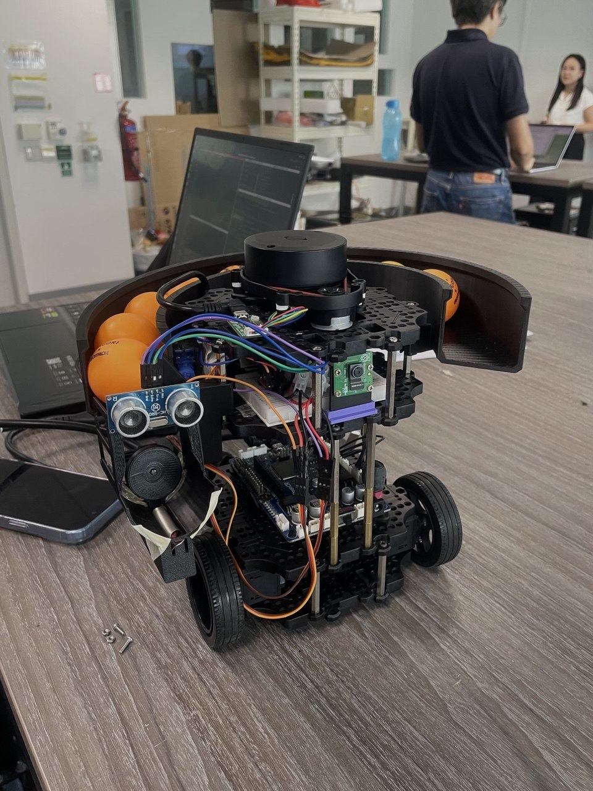
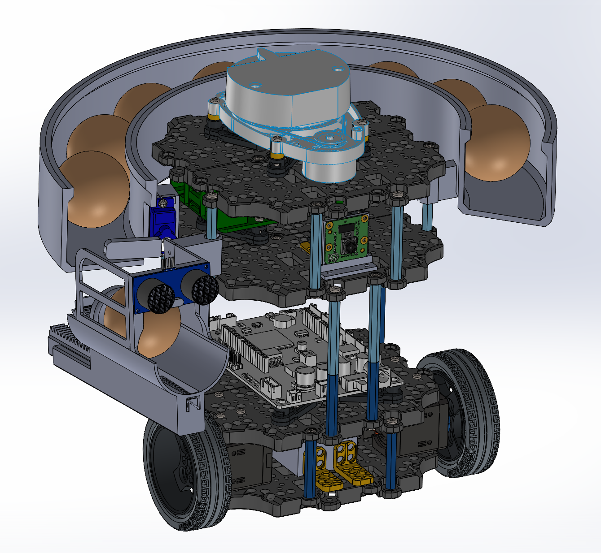
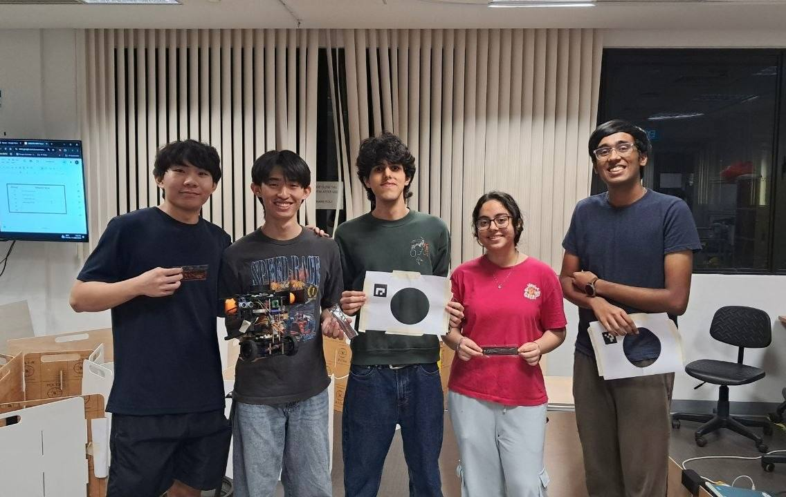

Fundamentals of System Design – CDE2310
System Overview
This project is a ROS2-based autonomous mission stack using LiDAR, RPi Camera & Rack-and-Pinion Spring-Loaded Launcher for a warehouse maze environment deployment.
Tech stack:
- ROS2 Humble
- SLAM Toolbox
- Custom Open-source ROS2 Frontier-based exploration
- OpenCV ArUco marker detection
- Python / C++
Core subsystems:
- Navigation and FSM orchestration
- Docking at static and dynamic delivery zones via ArUco marker detection
- 3D-printed Spring-loaded rack-and-pinion launcher system
- Fully simulated in Gazebo
- Successful static and dynamic ball delivery and autonomous exploration & navigation of warehouse maze environment
🔗 Navigation
- Home
- Requirements Specification
- Concept of Operations
- High Level Design
- Software Subsystem: Navigation and FSM
- Software Subsystem: ArUco Marker Detection
- Mechanical Subsystem
- Electrical Subsystem
- Interface Control Document
- Software and Firmware Development
- Testing Documentation
- User Manual
- Areas for Improvement
- Appendix
Our Robot


Final Navigation Run (Sped Up)
Full Mission Run:
The Team
